CS280A · Project 2
Fun with Filters and Frequencies
Convolution from scratch, edge detection with finite differences and derivative-of-Gaussian filters, frequency-domain sharpening and hybrid images, and multiresolution blending with Gaussian and Laplacian stacks.
Part 1.1
Convolutions from Scratch
Result: my convolution matches scipy; 2-loop is 6× faster than 4-loop, scipy ∼50× faster still.
I implemented 2D convolution in NumPy with zero padding, supporting
same and full output modes. The kernel is
flipped in both axes before sliding. The 4-loop version iterates over
every output pixel and every kernel entry. The 2-loop version
iterates over output pixels and computes each one as
np.sum(patch * kernel), vectorizing the inner kernel
loop.
4-loop version
def convolve_4loops(padded, kernel, output_shape):
out = np.zeros(output_shape)
for i in range(output_shape[0]):
for j in range(output_shape[1]):
for u in range(-kh, kh+1):
for v in range(-kw, kw+1):
out[i, j] += kernel[u+kh, v+kw] * padded[i+kh+u, j+kw+v]
return out2-loop version
def convolve_2loops(padded, kernel, output_shape):
out = np.zeros(output_shape)
for i in range(output_shape[0]):
for j in range(output_shape[1]):
out[i,j] = np.sum(padded[i:i+k1, j:j+k2]*kernel)
return out
I applied a 9×9 box filter (all entries 1/81, so brightness is
preserved) and the finite difference operators
Dx = [−1, 0, 1] and
Dy = [−1, 0, 1]T to a grayscale selfie.
The box filter blurs the image. Dx responds to horizontal intensity
changes (vertical edges) and Dy to vertical changes (horizontal
edges). Dx and Dy outputs are shown with gray centered at 0.
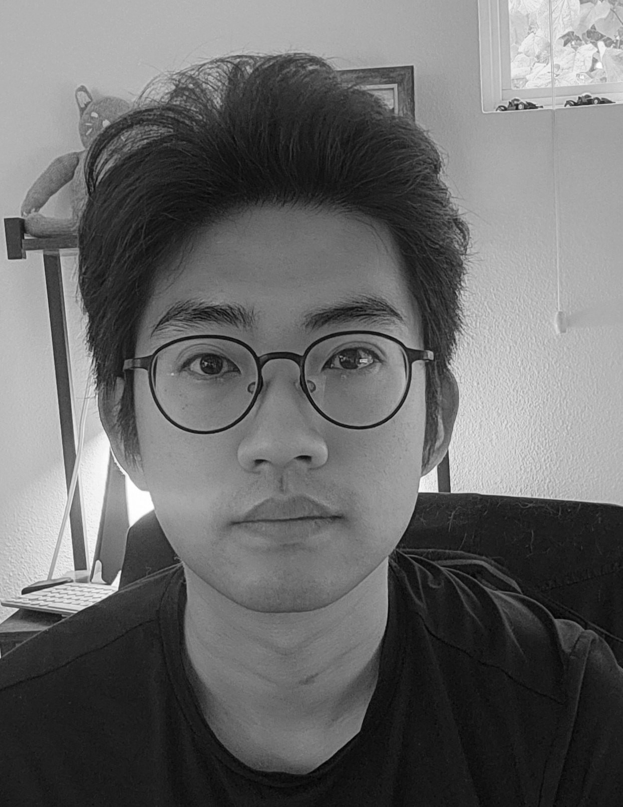
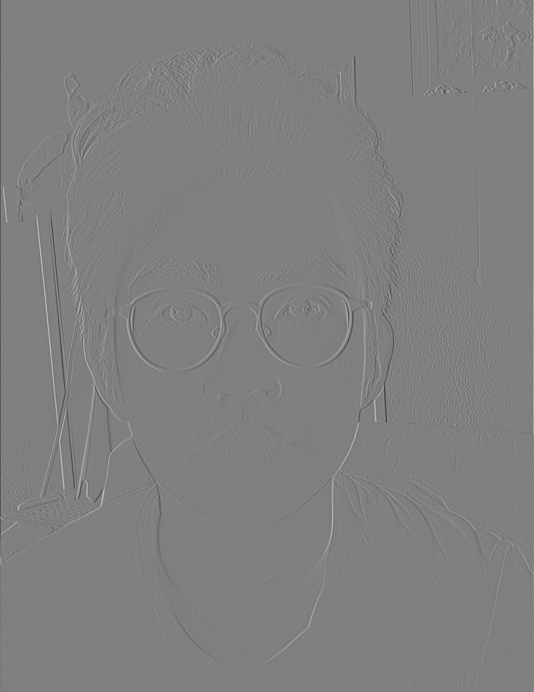
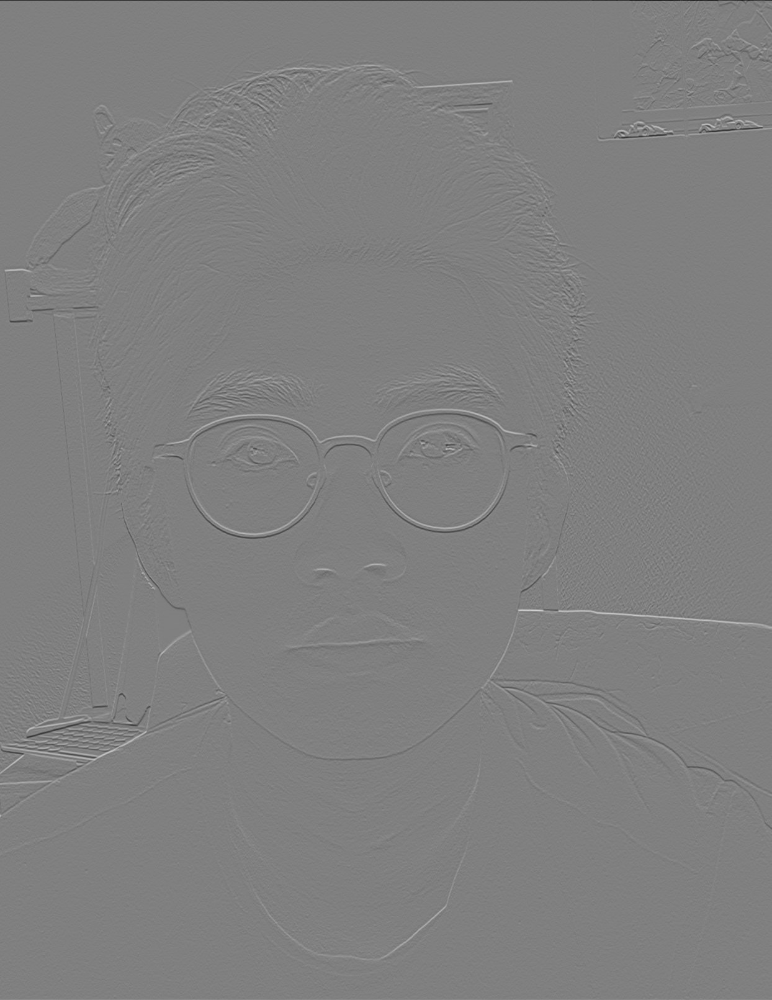
My outputs match scipy.signal.convolve2d(mode='same',
boundary='fill') for all three kernels. The box filter differs
by at most 6.7e-16, which is floating-point rounding from summing in
a different order. Dx and Dy match exactly because their weights are
integers.
| Kernel | Shape | Matches scipy | Max abs diff |
|---|---|---|---|
box9 |
9×9 | True | 6.7e-16 |
Dx |
1×3 | True | 0.0 |
Dy |
3×1 | True | 0.0 |
Runtime on a 150×150 image with a 9×9 box filter: the 4-loop version takes 1.12 s, the 2-loop version 0.18 s, and scipy 0.0036 s. Vectorizing the inner loop gives about a 6× speedup. Scipy is another ∼50× faster because its entire convolution runs in compiled code, while mine still makes one Python-level NumPy call per pixel.
150×150 image, 9×9 kernel
| Method | Runtime | × slower than scipy |
|---|---|---|
| 4-loop | 1.12 s | 310.6× |
| 2-loop | 0.18 s | 51.3× |
| scipy | 0.0036 s | 1× |
With zero padding, the kernel averages in black pixels wherever it
overlaps the border. So the outer 4 pixels (the kernel's half-width)
darken progressively toward the edge, most strongly at the corners.
Scipy's boundary='fill' behaves identically. Reflect
padding (boundary='symm') avoids the artifact by
extending the image with its own mirrored values.
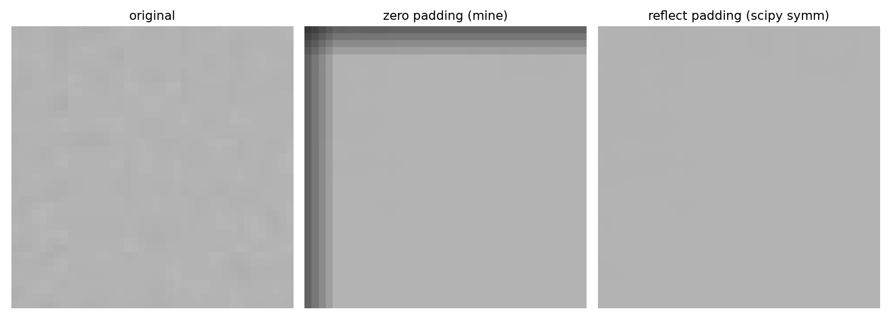
Part 1.2
Finite Difference Operator
Result: finite differences find edges but also grass texture; best threshold t = 0.25.
I convolved the cameraman image with
Dx = [−1, 0, 1] and
Dy = [−1, 0, 1]T using my convolution
from Part 1.1 (zero padding, same mode). Dx responds to horizontal
intensity changes (vertical edges such as the tripod legs), and Dy to
vertical changes (horizontal edges such as the horizon). The
gradient magnitude √(dx² + dy²) combines both into an
orientation-independent edge strength.
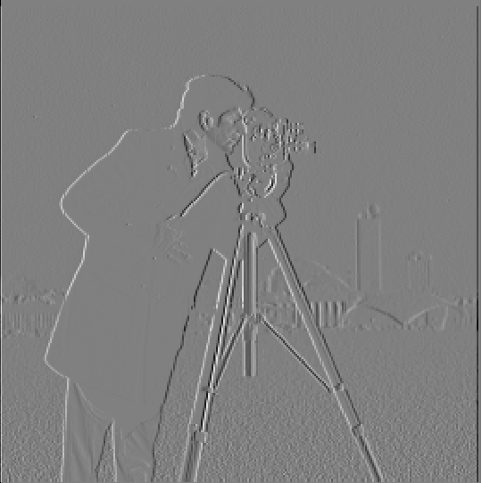
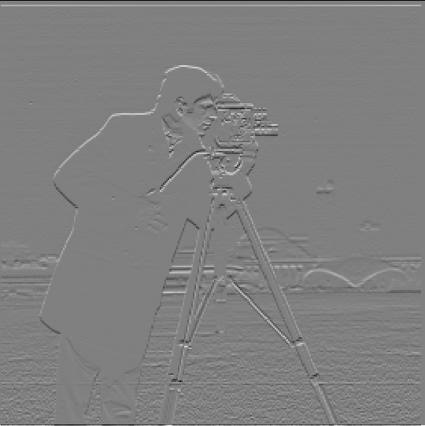
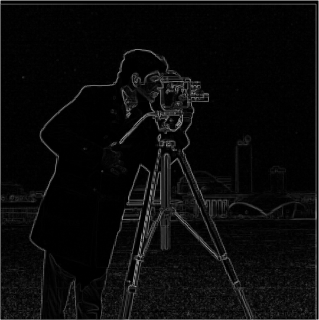
I binarized the gradient magnitude by marking pixels above a threshold as edges. Below about 0.15, the grass texture and noise are marked as edges. At 0.20 some speckle remains in the grass, and at 0.30 the coat outline and thin tripod legs start to break up. I chose t = 0.25: it keeps the main subject's outline while removing most of the grass noise, at the cost of losing weaker background edges like the buildings and horizon. I cropped 10 pixels from each border before thresholding to remove the frame caused by zero padding and a thin border in the source image.
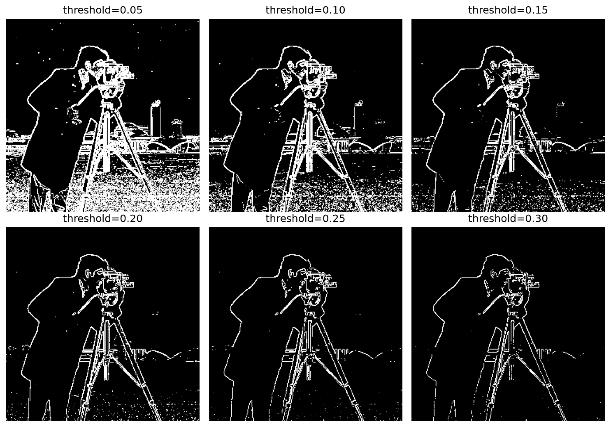
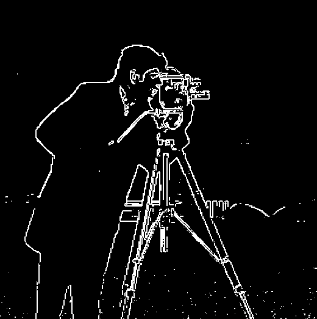
No single threshold cleanly separates real edges from texture, because finite differences amplify high-frequency noise. This motivates smoothing before differentiating in Part 1.3.
Part 1.3
Derivative of Gaussian (DoG) Filter
Result: Gaussian smoothing removes grass noise; blur-then-derivative equals a single DoG convolution; t = 0.08.
I built a 2D Gaussian (σ = 2, 13×13, half-width ≈
3σ) as the outer product of cv2.getGaussianKernel
with its transpose. This works because the Gaussian is separable:
G(x, y) = g(x)·g(y).
I compared two methods: (1) blur the image with the Gaussian, then apply Dx and Dy as in Part 1.2, and (2) pre-combine the filters into derivative-of-Gaussian kernels, DoGx = G ∗ Dx and DoGy = G ∗ Dy (computed with my convolution in full mode), and convolve the image once per direction. Because convolution is associative, (f ∗ G) ∗ Dx = f ∗ (G ∗ Dx), so both give the same result. The outputs match in the interior; the only difference is a thin border, where the two-step method applies zero padding twice. I cropped that border for display. The DoG filters show a negative lobe on one side and a positive lobe on the other: a smoothed derivative.
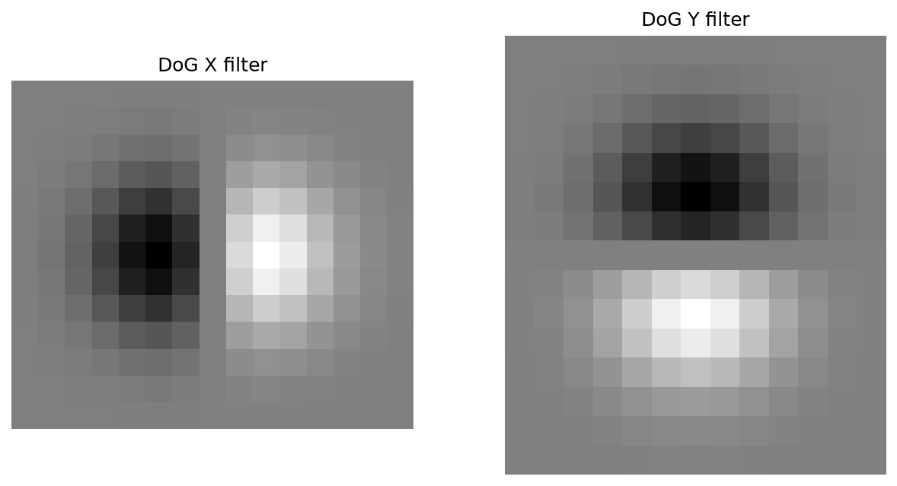
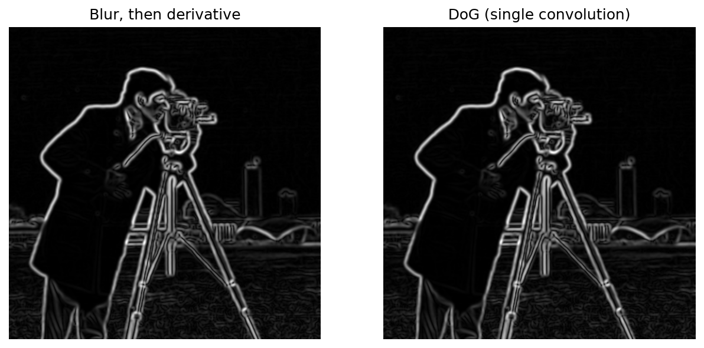
Smoothing removes most of the high-frequency grass texture before differentiating, so the gradient magnitude is much cleaner than in Part 1.2 and a single threshold separates object edges from background far better. Edges are thicker and smoother because each step is spread over several pixels.
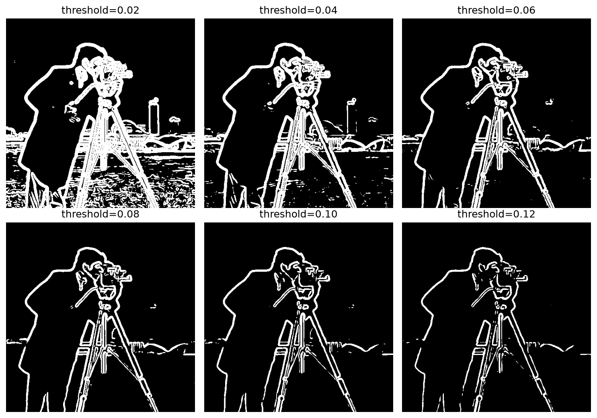
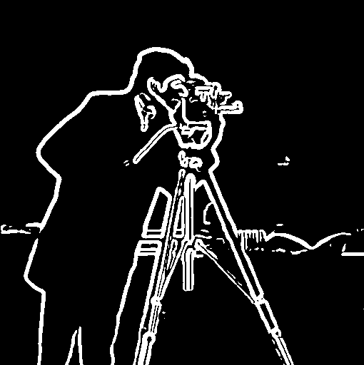
Gradient magnitudes are smaller overall, so the chosen t = 0.08 already isolates the subject cleanly, well below the t = 0.25 needed in 1.2. The trade-off is that very fine detail is lost as σ increases.
Part 1.4
Bells & Whistles
Result: hue encodes edge direction, brightness encodes edge strength.
Gradient orientation.
I computed the gradient orientation θ = atan2(∂f/∂y, ∂f/∂x) from the derivative-of-Gaussian outputs in Part 1.3 and visualized it in HSV color space. θ is mapped from [−π, π] to hue [0, 1], saturation is set to 1, and value (brightness) is the gradient magnitude normalized by its 99th percentile. Hue is cyclic, so −180° and 180° share the same color, matching the circular nature of angles. Using magnitude as brightness darkens flat regions, where orientation is meaningless noise, so only real edges are colored. Opposite sides of thin structures such as the tripod legs show complementary colors, because the gradient points in opposite directions across a dark-on-light edge.
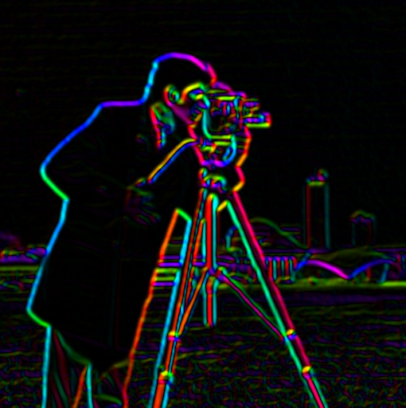
Part 2.1
Sharpening
Result: unsharp masking boosts high frequencies in a single convolution; α ≈ 1–2 looks natural, α = 5 creates halos; it cannot recover detail lost to blur.
Unsharp masking sharpens by adding back the high frequencies that a blur removes. I blur the image with a Gaussian (σ = 2, 13×13), subtract it from the original to get the details f − f ∗ g, and add a scaled copy back: f + α(f − f ∗ g). Because convolution is linear, this collapses into a single filter, f ∗ ((1+α)e − αg), where e is the unit impulse. The kernel is a tall positive spike surrounded by a shallow negative ring, and it sums to 1, so overall brightness is preserved. For color images I apply it to each RGB channel and clip to [0, 1].
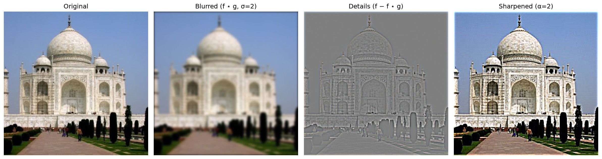
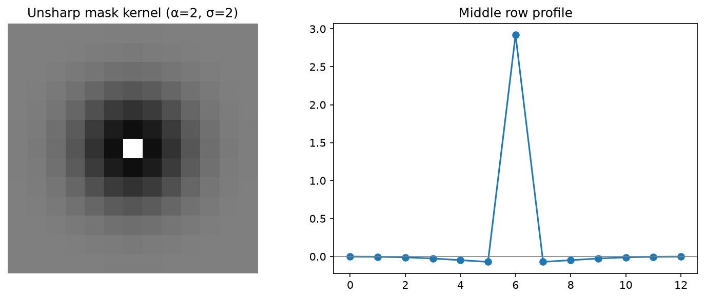
α = 0 returns the original. α ≈ 1–2 makes edges and texture noticeably crisper while still looking natural. At α = 5, the kernel overshoots on both sides of every edge, producing bright and dark halos, and it amplifies noise and JPEG artifacts, since those are high-frequency too.
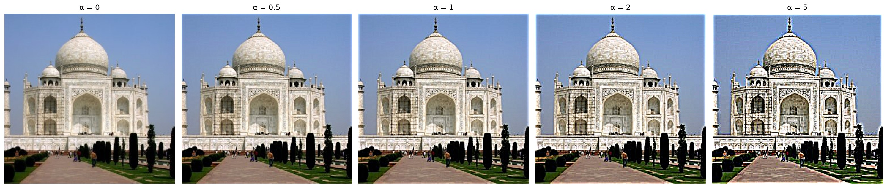
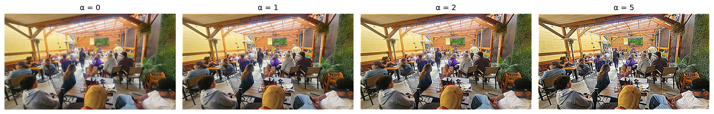
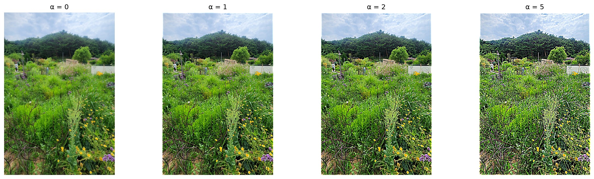
I blurred a sharp photo with the same Gaussian and then applied the unsharp mask (α = 2). Edge contrast returns: the eyes and face outline look crisp again. But fine detail such as the freckles and individual fur strands does not come back. The Gaussian blur suppressed those high frequencies, and sharpening can only amplify frequencies that are still present, so it improves apparent sharpness without restoring lost information.
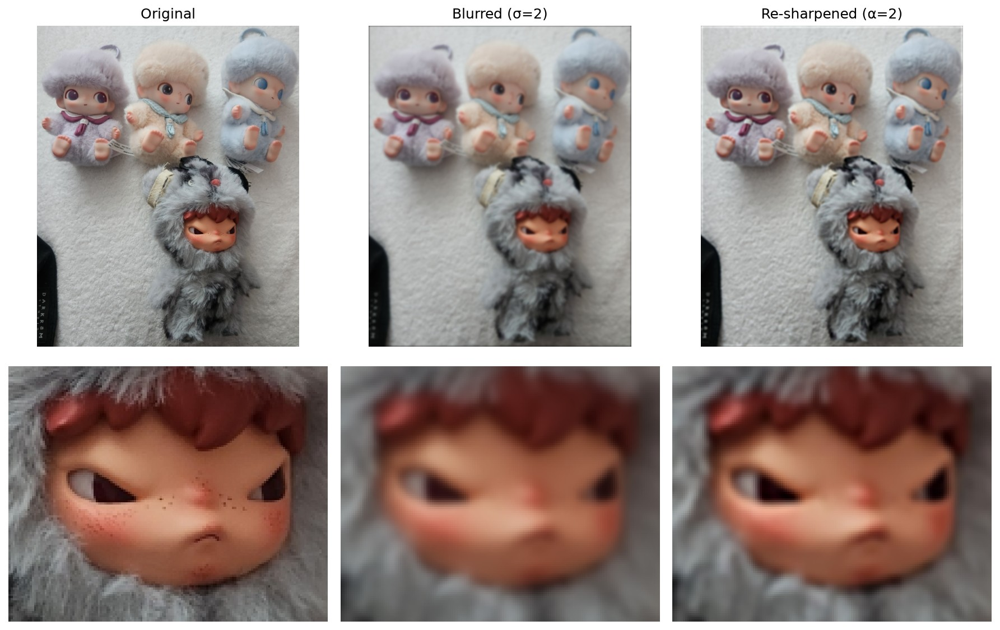
Part 2.2
Hybrid Images
Result: low frequencies of one image plus high frequencies of another; you see the high-pass image up close and the low-pass image from far away.
A hybrid image combines the low frequencies of one image with the high frequencies of another. Because our sensitivity to spatial frequency depends on viewing distance, the high-frequency image dominates up close and the low-frequency image dominates from far away. I align each pair by clicking two corresponding points (the eyes) with the provided alignment code, which scales, rotates, and crops the images to match. I then low-pass image A with a Gaussian (σlow) and high-pass image B with the impulse minus a Gaussian (σhigh): H = A ∗ Gσlow + B ∗ (e − Gσhigh). I chose σ by eye: σlow large enough that A's fine detail disappears, σhigh small enough that only B's edges and texture remain. The image with more fine texture (fur, wrinkles, printed text) works best as the high-pass input.
Favorite result: person + chimpanzee (σlow = 7, σhigh = 2)
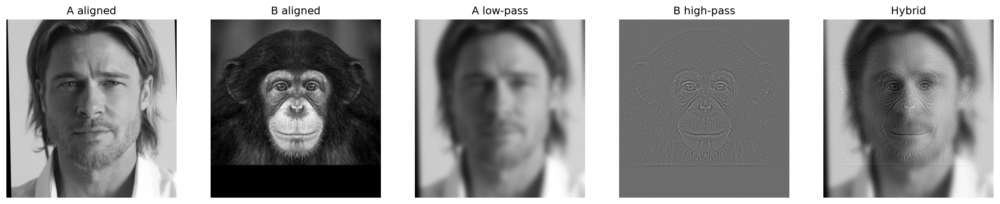
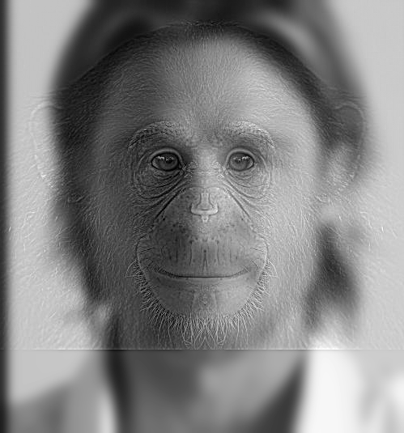
The input spectra are brightest at the center (low frequencies) and fade outward, with streaks from strong straight edges. The low-passed A keeps only the central region; everything outside is suppressed. The high-passed B has its center removed while the outer frequencies remain. The hybrid's spectrum is the combination: A's energy near the center and B's energy farther out, which is exactly why each image is visible at a different viewing distance.
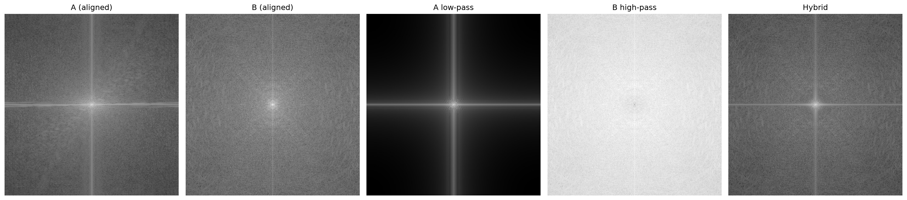
More results
The moon and basketball share the same circular outline, so the transition between the two readings is seamless. The landscape and fish do not share a shape, so up close the fish reads as an overlay on the scene rather than a full transformation; the hybrid still works in the sense that the fish disappears at small scale, but it shows that matching outlines matter for a convincing effect.
Moon + basketball (σlow = 7, σhigh = 2)
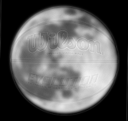
Landscape + fish (σlow = 5, σhigh = 3)
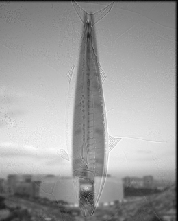
Bells & Whistles: color
I tried adding color to the low-pass image only, the high-pass image only, and both. Color in the low-pass image works best: color is mostly low-frequency information (large, smooth regions of hue), so it reinforces the far-away reading without cluttering the close-up. Color in the high-pass image barely shows, because after high-pass filtering it survives only as faint fringes along edges. Color in both makes the two images' colors compete and slightly muddies the result.
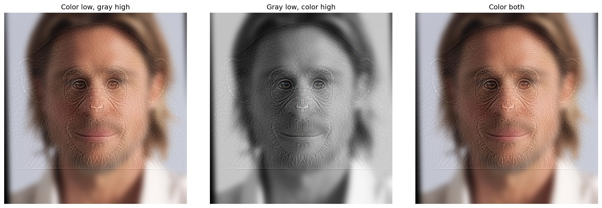
Part 2.3
Gaussian and Laplacian Stacks
Result: Gaussian stacks separate an image into progressively blurrier copies; Laplacian stacks split it into frequency bands that sum back to the original.
A Gaussian stack is built by repeatedly blurring the image with a Gaussian (σ = 5) without downsampling, so every level keeps the full resolution: G0 = I, Gi+1 = Gi ∗ g. Each level keeps only lower frequencies than the one before. A Laplacian stack stores what each blur step removed: Li = Gi − Gi+1, with the last Gaussian level kept as the base, LN = GN. Each Laplacian level is a band-pass image: level 0 holds the finest texture, deeper levels hold coarser structure, and the base holds overall color and brightness. Summing all levels reconstructs the original exactly, which I verified numerically. Because I re-blur with the same σ at each step, the effective blur grows slowly and the middle bands overlap, so Laplacian levels 1–3 look similar. Doubling σ per level would separate the bands more evenly. Laplacian levels are rescaled per level for display, since they are centered at zero.
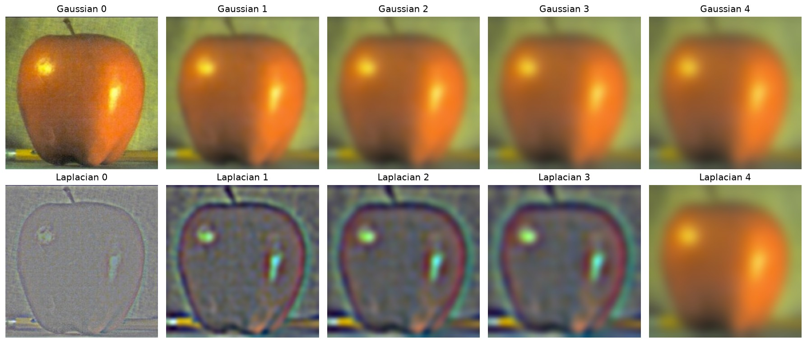
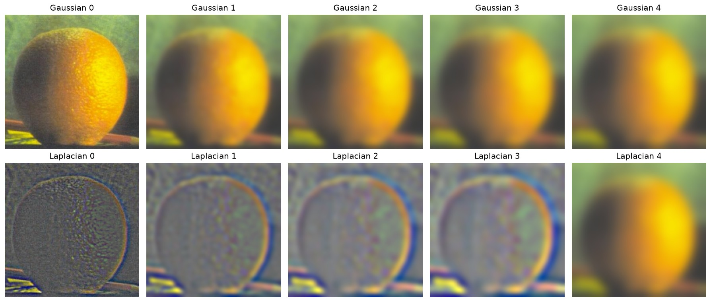
I built a Gaussian stack of a left/right step mask with the same blur schedule. At each level I weight the apple's Laplacian level by the mask and the orange's by one minus the mask, then add them. The mask is sharp at level 0 and wide at level 4, so fine texture switches abruptly at the seam while color and shading transition gradually. Collapsing (summing) the masked levels gives the half-apple, the half-orange, and the seamless oraple in the bottom row.
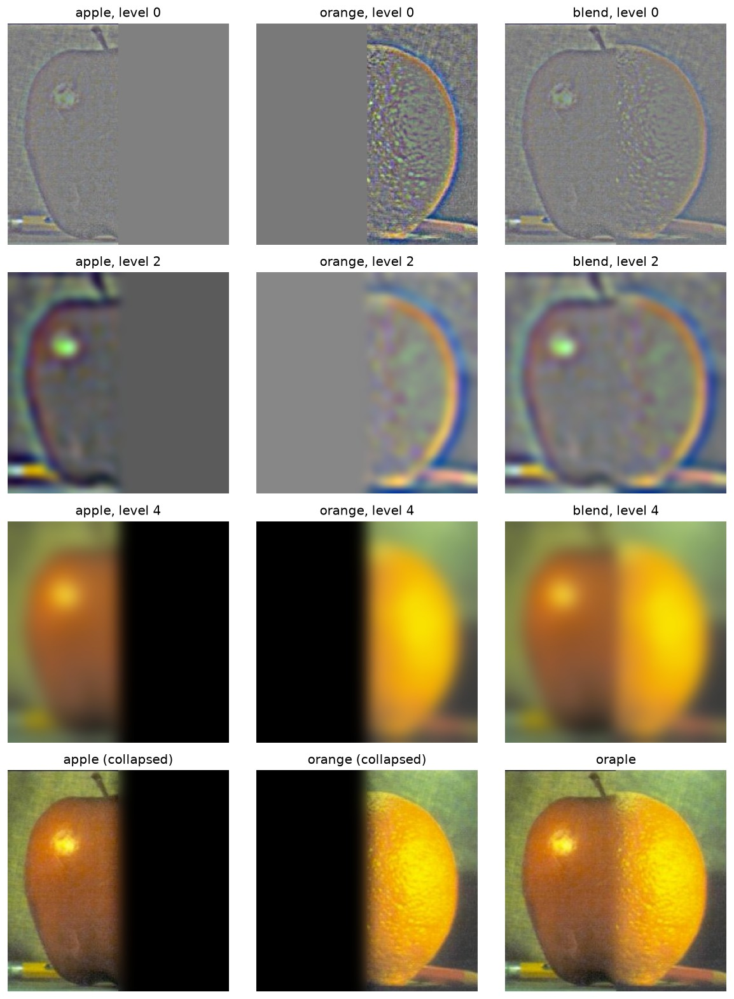
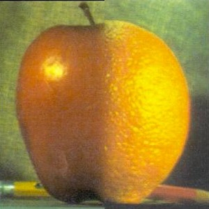
Part 2.4
Multiresolution Blending
Result: blending each Laplacian band with a correspondingly blurred mask hides seams without ghosting, for straight and irregular masks.
Multiresolution blending (Burt & Adelson) blends two images band by band. I build Laplacian stacks of both images and a Gaussian stack of the mask with the same blur schedule (σ = 5, 5 levels). At each level I combine the two bands with that level's mask, Lk = Mk·LAk + (1 − Mk)·LBk, then sum all levels. Because the mask is blurred more at each level, fine detail switches sharply at the boundary (no ghosting), while coarse color and brightness transition over a wide region (no visible seam). The same code works for any mask shape. All blends are done per RGB channel.
Straight seams
Besides the oraple, I split Michael and his zombie version down the nose line. The face joins cleanly, and the very different backgrounds (brown vs. blue) fade across a wide band thanks to the heavily blurred mask at the coarse levels.
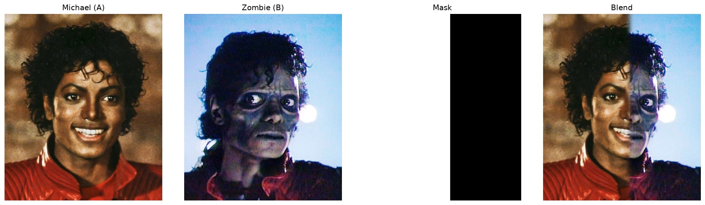
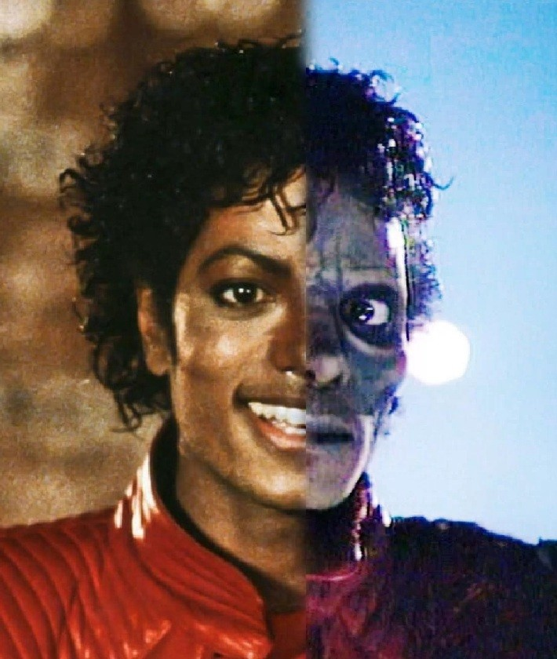
Irregular masks
For the cat and volleyball, I cropped both images so the cat's face lands on the ball and used an oval mask around the face. For the half-face blend, a half-oval mask replaces the right half of Michael's face with the zombie's.
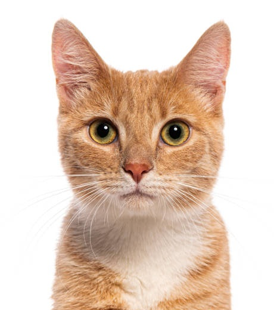
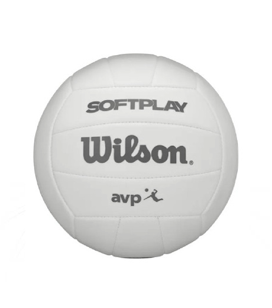
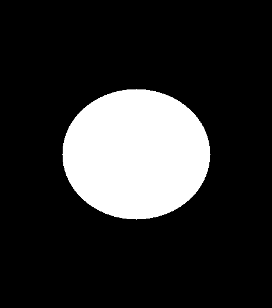
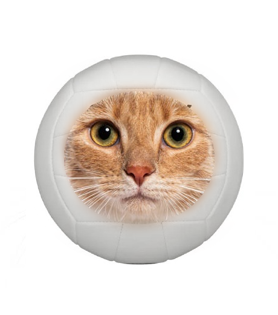
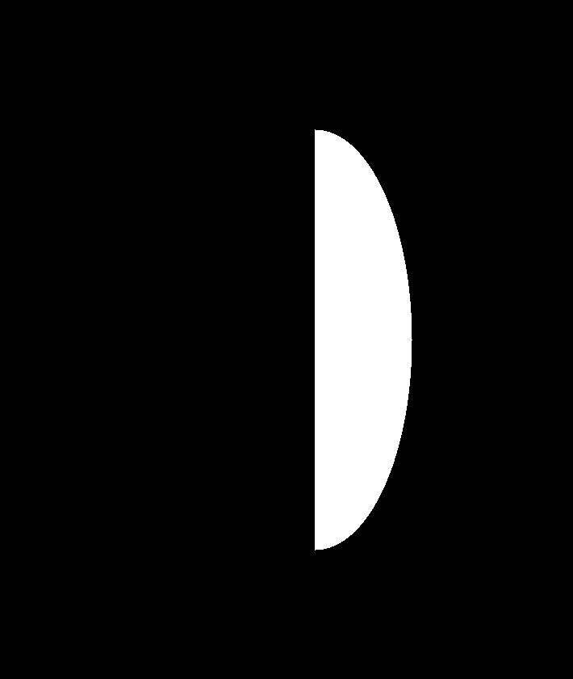
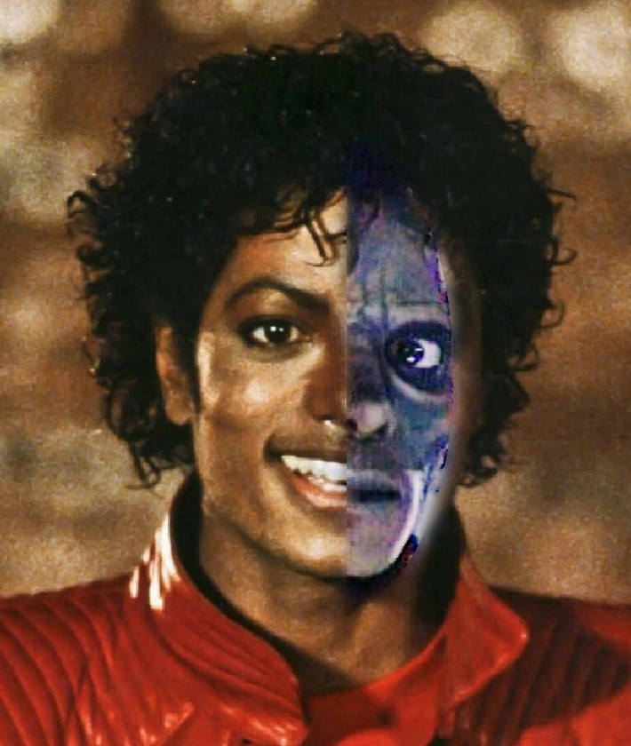
Laplacian stack visualization
At level 0 the masked bands meet at a sharp edge, so texture does not mix. At level 4 the mask is wide and soft, so the zombie's colors fade gradually into Michael's. Summing all levels gives a blend with no hard seam.
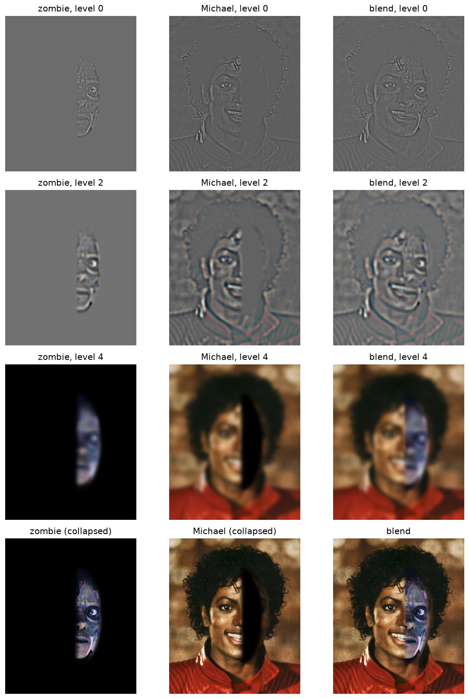
Bells & Whistles: color
Blending removes seams in edges and texture, but the zombie image has a strong blue cast, so the color mismatch remains visible. Before blending, I matched the zombie's color statistics to Michael's in Lab space (Reinhard color transfer: match each channel's mean and standard deviation, at 70% strength). Lab separates lightness from color, so this warms the zombie without changing its detail. The color-matched blend reads as one face with a zombie half rather than two pasted images.
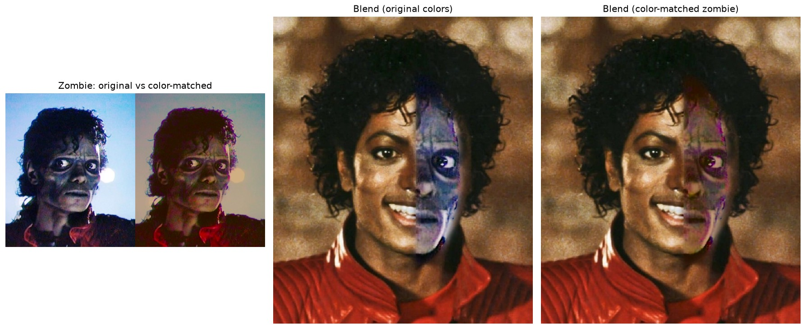